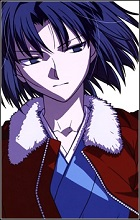
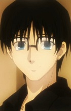
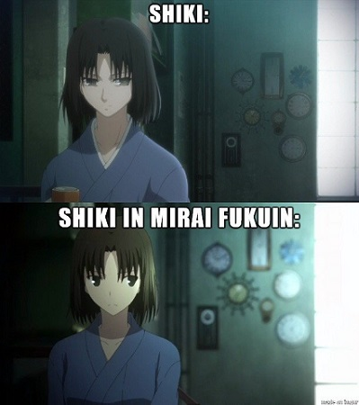
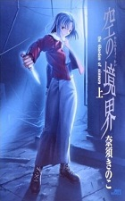
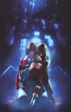
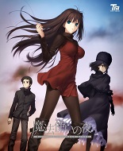
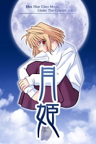
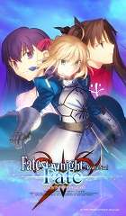
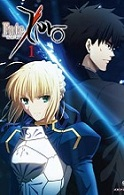

Kara no Kyoukai possède une particularité : Le récit est raconté de façon non-linéaire.
Ce qui veut dire que les chapitres sont mélangés, nous laissant le soin de réfléchir quant à leurs placements dans la chronologie, ainsi qu'aux non-dits entre chaque.
Ainsi, le film 1 est en réalité le plein milieu de l'histoire !
Pour cette raison, je vais rester très vague dans le contenu de cette page afin de ne vous gâcher absolument rien de cette œuvre très atypique.
Kara no Kyoukai est originellement un roman doujinshi dont les chapitres sont sortis entre Octobre 1998 et Août 1999, avec Takashi Takeushi aux quelques rares dessins accompagnants le texte de Kinoko Nasu.
Le duo reçoit alors un petit succès d'estime, ce qui les incitent à fonder Type-Moon, un éditeur de Visual Novels et romans japonais, aujourd'hui connu comme une véritable galaxie incontournable de cette communauté-ci.
Suite au succès explosif de Fate/Stay Night, leur second Visual Novel qui est sorti en Janvier 2004, Type-Moon remet Kara no Kyoukai un petit peu en avant en en faisant 2 tomes reliés, avant de les séparer en 3 tomes plus courts suite à son adaptation Animé de 2007.
Fate/Stay Night ayant réellement secoué le monde des Visual Novels, il était évident que Type-Moon allait attirer l'attention, et ils ont surenchéri en commissionnant le studio Ufotable (Fate/Zero, Kimetsu no Yaiba...), débutant à ce moment-ci, ainsi que Yuki Kajiura (Sword Art Online, Madoka★Magica...) pour créer une adaptation Animé de Kara no Kyoukai avec grand soin.
C'est alors qu'Ufotable réalisa 8 films, sortis entre Décembre 2007 et Février 2011, adaptant chacun 1 des chapitres du roman avec un style graphique et une animation extrêmement fluide, limite révolutionnaire, surpassant sans aucun conteste possible les Animés sortis à ce moment-là, et égalisant sans problème les meilleurs de nos jours.
Suite à la sortie des premiers films, Kinoko Nasu écrit 5 nouveaux chapites de Kara no Kyoukai, "Mirai Fukuin", qui seront publiés entre Août et Septembre 2008, avant de se faire adapter en 2 films par Ufotable en Septembre 2013.
Pour fêter la sortie de ces 2 films, Nasu écrit de nouveaux 5 chapitres, "Shuumatsu Rokuon", qui eux, ne verront pas le jour en animation.
Après quoi, Kara no Kyoukai tomba dans l'oubli, laissant simplement place à des caméos de ses personnages dans différentes œuvres de Type-Moon.
Les romans ne sont pas licenciés, ni en France, ni en Angleterre ou aux Etats-Unis.
Les 8 premiers films sont disponible légalement sur ADN sous le nom de "Garden Of Sinners". (Qui est le sous-titre officiel de Kara no Kyoukai)
Il est assez important de noter que Kara no Kyoukai fait partie du "Nasuverse", un univers fictif regroupant les histoires écrites par Kinoko Nasu possédant les mêmes "règles" qui régissent le monde.
Synopsis du Film 1 :
En Septembre 1998, une série de suicides énigmatiques laisse le Japon déconcerté et dévasté.
C'est alors que Touko Aozaki, une mage qui dirige une agence de détective spécialisé dans ces éléments paranormaux, remarque des similarités flagrantes et troublantes liant les cas trompeusement sans rapport les uns avec les autres : Toutes les victimes sont des lycéennes sans histoires qui ont subitement décidées de sauter d'un certain vieil immeuble abandonné...
Pour enquêter sur la cause de ces événements, Touko envoie Shiki Ryougi, une jeune fille mystérieuse avec une personnalité très froide et agressive, qui possède les "Mystic Eyes Of Death Perception" ("Yeux mystiques de perception de la mort", traduit en "Oeil de mort"), une capacité surnaturel qui lui permet de voir la mort, littéralement...
Bande-annonce du film n°1
Personnages Principaux :
Shiki Ryougi

La protagoniste du récit; Shiki est une jeune fille très énigmatique...
Elle est très sèche, froide, agressive et vulgaire.
Elle possède des capacités surnaturels, notamment les "Mystic Eyes Of Death Perception", qui lui permettent de voir les "lignes de vie" de tout objet ou être-vivant.
Elle est représenté en permanence avec un kimono bleu sous un blouson rouge en cuir.
"Tout en ce monde possède une source.
Sans oublier les humains, l'atmosphère, la volonté ou le temps.
Mes yeux me permettent de voir la mort.
C'est pourquoi... je peux tuer même dieu, s'il existe !"
La série de film est à propos de son mystérieux passé, et de comment celui-ci a bouleversé Mikiya.
Mikiya Kokuto

Deutéragoniste de l'histoire; Mikiya est un jeune homme extrêmement gentil, aimant aider son prochain.
Il aide Touko à gérer son agence, s'occupant également d'enquêter sur les différents évènements étranges qu'ils rencontrent.
Mikiya démontre une intelligence supérieure à la moyenne, une grande ouverture d'esprit, lui permettant d'accepter l'existence d'éléments occultes, ainsi qu'une grande compétence d'investigation.
Il possède une sœur qui étudie dans une école de magie et semble être la disciple de Touko.
Il tient énormément à Shiki, bien que son attirance pour elle semble inexpliquée, comme destinée.
Touko Aozaki
On ne sait pas grand chose de Touko Aozaki.
Elle est une puissante mage absolument effrayante, aimant modifier sa personnalité selon les personnes qu'elle doit côtoyer, comme un masque qu'elle change constamment.
Elle aime les jeux-vidéos, les cigarettes et fabriquer des poupées à taille humaine extrêmement réalistes.
Bien qu'elle possède un rôle de support dans Kara no Kyoukai, Touko est en réalité l'un personnage les plus puissant, terrifiant, et important du "Nasuverse", mais je reviendrais après sur ce fameux univers du créateur.
Pourquoi j'aime cette œuvre :
1. Les mystères
Comme je l'ai dit dans la page de Détective Conan, je suis un grand fan de mystères, et Kara no Kyoukai n'en manque pas !
De par son procédé narratif, il est obligatoire que le spectateur provide un effort de mémoire et de réflexion, ne serait-ce que pour situer chronologiquement chaque parties.
Outre cela, l'histoire elle-même contient beaucoup de passages où une réflexion est nécessaire : Entre le passé de Shiki, les non-dits et les "énigmes" philosophiques, il y a beaucoup d'informations à digérer, mémoriser et analyser, à tel point que la plupart des spectateurs ne comprennent pas tout à fait certains des dialogues des films n°1 et 5, et encore moins les révélations dîtes à demi-mots du film n°7 et 8...
C'est pour cela que je recommande de revisionner les films une fois l'aventure finie (en ordre chronologique si ça peut aider), chercher des réponses sur internet, ou lire le wiki anglais afin de peut-être mieux comprendre les vérités, qui ne sont vraiment révélées qu'à demi-mots.
2. La musique
La musique de Kara no Kyoukai est tout bonnement majestueuse, aidant ainsi, aux côtés du scénario, à créer une ambiance très atypique.
Yuki Kajiura est une compositrice qui a créé un language fictif inspiré de l'italien et du latin, donnant ainsi des mots qui sonnent très "mystiques" dans l'oreille, portés par les chanteuses talentueuses du groupe Kalafina, un des nombreux groupes que Kajiura a elle même fondée pour prodiguer à ses œuvres un meilleur rendu.
De par le scénario et l'ambiance générale de Kara no Kyoukai, la consonante, à la fois horrifique et féerique, des sons de Kajiura est bien plus appropriée que dans les autres œuvres où elle a été amenée à travailler, lui permettant de pouvoir pleinement user de son talent particulier.
Une des musiques récurrentes des films. (Vocal à 1:34)
Les Endings usent en plus japonais, permettant ainsi de transmettre les sentiments et craintes d'un des personnages du film associé au travers d'une musique de fin.
L'Ending du film n°1, avec des sous-titres anglais. (L'embed n'est pas autorisé, cliquez donc sur "Regarder sur YouTube")
3. Les visuels
Un mot : Ufotable.
Pou ceux qui ne connaissent pas ce studio d'animation, Ufotable est considéré comme l'un des meilleurs grâce à son choix de palette de couleur très nuancé (notamment le rouge et le bleu), son animation extrêmement fluide et son style très numérique, qui restent encore aujourd'hui inégalés, faisant de Kara no Kyoukai leue premier projet usant de ce style qui leur est aujourd'hui si iconique.
Bien qu'Ufotable possède des dessinateurs et animateurs très talentueux, les véritables monstres sont les personnes travaillant dans le département "Digital Team", qui est chargé d'embellir le travail de leurs collègues à l'aide de nombreux effets numériques divers, prodiguant un résultat dynamique et explosif, notamment lors des scènes de combats.
Combat issu de Fate/Stay Night : Unlimited Blade Works TV.
Si vous comprenez l'anglais, je vous recommande vivement à regarder la vidéo suivante, qui explique en quoi ce studio japonais est si incroyable.
Vidéo de "Canipa Effect" sur le studio Ufotable.
Les points positifs et négatifs :
. Les musiques, qui sont absolument divines.
Yuki Kajiura n'est pas considérée comme la meilleure dans son domaine pour rien !
. Les mystères, qui requièrent un investissement très conséquent de la part du spectateur.
. L'animation, qui est tout bonnement d'un tout autre niveau.
. Shiki Ryougi, qui est l'un des personnages (féminin en plus !) fictifs les plus complexes et badass existant.
. Le style de dessin, qui change entre le film n°8 et 9.
Le style de dessin de Takeshi Takeushi, l'illustrateur de Type-Moon, a pas mal changé avec le temps.
Ufotable a utilisé son style de 1998 pour les films n°1 à 8, mais celui de 2013 pour les films 9 & 10, donnant un rendu très différent.
Par coïncidence, ce changement à un style très "mignon" peut être justifié par le développement de Shiki à la fin du film n°7.

En haut se trouve le style des films n°1 à 8, et en bas le style des films 9 & 10.
. Déconseillé aux âmes sensibles, qui auront beaucoup de mal avec les nombreuses scènes choquantes.
L'ordre de visionnage :
Films vs Roman

La petite question habituelle : "Films ou Romans ?"
Et la réponse est évidente : Regardez les films.
L'animation et les musiques sont évidemment un énorme plus pour cette adaptation, mais le problème vient en réalité de l'accès aux romans.
En effet, les romans ne sont pas licenciés, et donc pas traduit par des professionnels ni en français, ni en anglais.
On doit donc se reposer sur des traductions des fans, mais c'est ici que les choses se compliquent.
Il n'y a aucune traduction française, tandit qu'il y en a 2 en anglaises :
Celle de Baka-Tsuki, une traduction de haut niveau ayant été, malheureusement, abandonné à un peu près 60%. (La moitié du chapitre 5, adapté dans le film n°5.)
Celle de Cokesakto, une très mauvaise traduction prenant de grande liberté d'écriture, mais complète.
On se retrouve donc avec le choix entre une bonne traduction incomplète ou une mauvaise traduction finie...
Ayant vraiment eu envie de lire le roman, j'ai tout de même lû la traduction de Cokesakto, que j'ai quand même fini par aimer malgré les libertés que j'ai remarqué.
Les films

Les 8 films sur l'histoire principale sont numérotés, l'ordre est donc évident.
Kara no Kyoukai 1 : Fuukan Fukei. (Aussi nommé Thanatos)
Kara no Kyoukai 2 : Satsujin Kousatsu - Zen (Aussi nommé Enquête Criminelle)
Kara no Kyoukai 3 : Tsuukaku Zanryuu (Aussi nommé Persistante Douleur)
Kara no Kyoukai 4 : Garan no Dou (Aussi nommé L'Abime du Temple)
Kara no Kyoukai 5 : Mujun Rasen (Aussi nommé Spirale Contradictoire)
Kara no Kyoukai 6 : Boukyaku Rokuon (Aussi nommé Enregistrement de Souvenirs Oubliés)
Kara no Kyoukai Remix : Gate Of Seventh Heaven, un récapitulatif des films n°1 à 6, mis en ordre chronologique, avec en plus les Endings édités par-dessus.
Excellent pour aider ceux qui ont du mal avec la chronologie, faire plaisir aux fans des Endings, et préparer pour le final.
Il n'est pas licencié.
Kara no Kyoukai 7 : Satsujin Kousatsu - Go (Aussi nommé Enquête Criminelle 2.0)
Kara no Kyoukai 8 : Shuushou (Aussi nommé The Last Name : Epilooogue)
Vient ensuite les 2 films bonus, qui ne sont pas licenciés.
Kara no Kyouaki : Mirai Fukuin, qui est considéré comme le film n°9
Kara no Kyouaki : Extra Chorus qui est considéré comme le film n°10
Le "Nasuverse"
Attaquons donc le gros morceau : le Nasuverse.
Mais d'abord, qu'est-ce que le Nasuverse ?
Il s'agit du nom du regroupement des œuvres écrites par Kinoko Nasu possédant les mêmes "règles" qui régissent l'univers, ou plutôt, les multiverses.
Il contient 4 séries principales : Mahoutsukai no Yoru, Kara no Kyoukai, Tsukihime et Fate/Stay Night, moultes séries secondaires tirées des 4 principales, comme par exemple Melty Blood ou Fate/Apocrypha, ainsi que quelques romans à part, tel que Tsuki no Sango et Notes.
Les séries principales du Nasuverse sont inter-connectés, mais sont tout de même pleinement appréciables si elles sont prisent une à une, vous pouvez donc les regarder dans l'ordre que vous voulez tant que vous suivez l'ordre de visionnage des séries elles-même, ce qui s'avère compliqué pour certains...
Mais avant de commencer, je tiens a préciser que Type-Moon est principalement un éditeur de Visual Novels, mais possède l'énervante habitude de ne pas traduire officiellement ses produits, forçant ainsi les fans non-japonais à pirater et traduire eux-mêmes les jeux et romans.
Si vous voulez donc y jouer, vous devrez chercher où trouver une version pirate, puis y appliqué un patch français.
Google pourra vous aider pour cela.
Les jeux et romans de Type-Moon possèdent quasiment tous également une adaptation Manga, qui ne sont pas toujours très bonnes...
Je ne les mentionnerais donc que dans le cas où elles sont intéressantes à lire.
Le Nasuverse étant assez conséquent, je ne vais pas autant entrer dans les détails que pour Kara no Kyoukai.
Mahoutsukai no Yoru

Synopsis :
Une jeune femme du nom d'Aoko Aozaki se trouve brusquement projetée dans le monde des mages, suite à la décision de son grand-père de faire d'elle la successeure de la famille Aozaki, une puissance très affluente et redouté dans ce domaine.
Aoko aura cependant beaucoup de mal à s'intégrer dans ce monde où les personnes en attendent trop d'elle, fait dû à la popularité de sa sœur, Touko Aozaki, une véritable prodige de ces arts mystiques.
Un soir, alors qu'Aoko se bat contre un mystérieux adversaire en usant de magie, elle se rend compte qu'elle a été aperçue par un civil.
La magie étant un secret tenu à l'écart du grand public, elle essaye de capturer ce témoin, mais sans succès.
Elle fera alors tout pour retrouver ce témoin, et le faire taire.
Dans le même temps, Soujuurou Shizuki, un jeune homme ayant vécu à la montagne, sans eau courante, ni électricité, déménage subitement en ville, où il surprend une femme user de magie.
Terrifié, il s'enfuit et essaye de se convaincre que ce dont il a été témoin n'était qu'un simple rêve.
Média :
Mahoutsukai no Yoru est originellement un roman que Nasu a écrit en 1996 pour ses amis.
Ayant été produit qu'en quelques exemplaires, il est absolument impossible à trouver.
Heureusement, suite à ses différents succès, Nasu fait une refonte du scénario et le transforme en un Visual Novel sorti en Avril 2012 sur PC.
Une adaptation en un film Animé produite par le studio Ufotable a été annoncé pour 2022, ainsi qu'un portage du jeu sur PS4 et Switch, avec, au passage, quelques améliorations.
Tsukihime et ses séries dérivées

Synopsis :
L'enfance de Shiki Tohno a été marquée par un grave accident qui l'a laissé affaibli et l'a éloigné du reste de sa famille pendant des années.
Ce drame lui a octroyé le don de voir les "lignes de la mort", dont sont constitués chaque chose et chaque être vivant.
Mais à l'âge de 16 ans, Shiki est subitement rappelé dans la demeure familiale par sa sœur, Akiha Tohno.
Il ne tarde pas à découvrir que des choses étranges se produisent en ville et dans sa propre maison, et que l'on souhaite le tenir à l'écart...
Un jour, alors qu'il marche dans la rue, Shiki croise une jolie jeune fille qui lui provoque une soudaine pulsion meurtrière, qu'il exerce en la tuant.
Persuadé d'avoir rêvé, il est extrêmement surpris de voir cette même jeune fille l'attendre devant son lycée le lendemain.
C'est ainsi qu'il découvre l'existence des vampires, des créatures inconnus des yeux de la société.
Médias :
Tsukihime est originellement un Visual Novel sorti sur PC en Décembre 2000.
Il a été adapté en un Animé de 12 épisodes par le studio JC Staff en 2003. (Non-licencié)
L'Animé est considéré comme étant une très mauvaise adaptation du jeu, et est donc évité par la majorité, qui recommande plutôt d'aller lire le Manga, qui lui est excellent. (Licencié par Ki-oon)
Au cour de 2001, Type-Moon sort Tsukihime Plus-Disc et Kagetsu Tohya, deux Visual Novels faisant suite à l'original.
Entre 2002 et 2021, 6 jeux de combat se basant sur l'univers de Tsukihime sont sortis, créant ainsi une série de jeux-vidéos "Melty Blood".
4 adaptation en Manga de cette série sont sortis entre 2005 et 2016, mais l'intérêt des jeux étant le combat, les Mangas ne sont très intéressant. (Premier Manga licencié par Pika, le reste n'est pas licencié)
En 2008, Nasu annonce qu'il planifie une refonte complète de Tsukihime, qu'il finira par sortir sous forme de Visual Novel en Août 2021 sur PC, PS4 et Switch.
Fate/Stay Night

Fate/Stay Night étant elle-même une série comprenant beaucoup d'éléments, je vais juste parler des 4 séries principales, puis vous rediriger vers une liste que j'ai faite sur MyAnimeList.
Cliquez sur les noms en bleus pour voir la page anglaise détaillé de la série correspondante, comprenant un synopsis, une note, etc.
Synopsis :
Shirô Emiya a tout perdu lors d'un immense incendie : sa famille, sa maison et ses repères.
C'est alors qu'il est adopté par Kiritsugu Emiya, un homme seul, froid et désespéré qui lui avouera qu'il est un magicien, une personne usant d'arts surnaturels pour tenter de rendre le monde meilleur.
Quelques années plus tard, après le décès de Kiritsugu, Shirô se voit forcé de participer à "La guerre du Saint-Graal", un tournoi mortel réunissant 7 magiciens, dont l'enjeu est le Saint-Graal, le calice pouvant exaucer tous les souhaits de son possesseur.
Chaque mage invoque alors un "Servant", un héros des temps passé ou futur, qui lui prête sa force pour tenter de se voir accordé un vœu.
Shirô invoque alors "Saber", une jeune et jolie épéiste.
Médias :
Fate/Stay Night est originellement un Visual Novel sorti sur PC en Janvier 2004, avant de recevoir une mise à jour nommé "Réalta Nua" sur PC, PS2 et PSVITA en Avril 2007, ajoutant notamment des doublages.
Fate/Stay Night contient 3 scénarios qui usent des mêmes personnages, et commence de la même manières, mais le protagoniste fera un petit choix différent au début de chaque, provoquant un effet papillon qui modifira grandement les personnages centraux, les déroulés ainsi que les fins de ces scénarios.
Il est important de noter que pour le jeu, le joueur est obligé de participer aux 3 scénarios dans l'ordre choisis par l'auteur, causant une accélération crescendo de tensions et révélations.
Le scénario n°1 : "Fate", se concentre sur Shirô et son servant : Saber, créant ainsi une histoire romantique.
Il a été adapté en un Animé de 24 épisodes par Studio DEEN en 2006 (Licencié par ADN), mais est souvent ignoré, possédant un style "vieillot", et étant le scénario le moins enclin à l'action.
Je vous recommande vraiment de NE PAS le sauter, s'il vous plait, vraiment.
Le scénario n°2 : "Unlimited Blade Works", se concentre sur Shirô ainsi que sa camarade de classe Rin et son servant : Archer, créant ainsi une histoire épique, héroïque.
Il a été adapté en 1 film par Studio DEEN en 2010 (Non-licencié), avant de se faire ré-adapté en 27 épisodes* par le studio Ufotable en 2014. (Licencié par Wakanim)
Le film écrasant le contenu équivalent à 20 heures de jeu en un film de 2h, la série est a privilégier, surtout qu'elle bénéficie du fameux studio Ufotable.
* : Pour ceux qui ne trouvent pas les 27 épisodes, il y a le Prologue/episode 0, les épisodes 1 à 25 qui sont divisés en 2 saisons, une de 13 et une de 12, ainsi qu'une fin alternative non licencié.
Le scénario n°3 : "Heaven's Feel", se concentre sur Shirô et la petite sœur de son ami : Sakura, créant ainsi une histoire horrifique.
Il a été adapté en 3 films par le studio Ufotable entre 2017 et 2020. (Licenciés par Wakanim)
Ordre :
Fate/Stay Night (2006)
Fate/Stay Night : Unlimited Blade Works - Prologue
Fate/Stay Night : Unlimited Blade Works (TV)
Fate/Stay Night : Unlimited Blade Works 2nd Season (TV)
Fate/Stay Night : Unlimited Blade Works - Sunny Day
Fate/Stay Night Movie : Heaven's Feel I - Presage Flower
Fate/Stay Night Movie : Heaven's Feel II - Lost Butterfly
Fate/Stay Night Movie : Heaven's Feel III - Spring Song
Bonus/Recap :
Fate/Prototype (Une bande annonce de 12 minutes du prototype de Fate/Stay Night)
Fate/Stay Night : TV Reproduction (Recapitulatif de l'Animé de 2006)
Fate/Stay Night Movie : Unlimited Blade Works (Première adaptation de la route Unlimited Blade Works)

Fate/Zero :
Originellement un roman, Fate/Zero narre le passé de Kiritsugu, et nous montre ce qui s'est passé 10 ans avant le début de Fate/Stay Night.
Il a été adapté en un Animé de 25 épisodes par le studio Ufotable en 2011.
Le roman a été traduit en anglais par des fans sur Baka-Tsuki, tandit que L'Animé est licencié par Netflix.
Beaucoup de monde trouve Fate/Zero meilleur que Fate/Stay Night, et recommande donc de le regarder en premier, ce qui est une grossière erreur, Fate/Zero ayant été créé pour être lû/regardé par des fans de l'original. (Rien que l'épisode 1 de Fate/Zero gâche presque 80% des révélations de Fate/Stay Night)
Les romans
Clock Tower 2015
Un roman publié en 2014, parlant de la "Tour de l'Horloge", l'école de magie de Londres, souvent cité dans les différentes œuvres du Nasuverse.
Il n'est pas licencié, mais quelques fans anglais ont traduis 4 des 5 chapitres du roman.
Tsuki no Sango
Un roman publié en 2011, qui narre l'histoire de "Princesse", une jeune fille vivant dans les années 3000, qui est une descendante du "peuple de la Lune".
Il a également été adapté en Manga entre 2012 et 2019, et une bande annoce de 3 minutes à été réalisé en Décembre 2010.
Le roman n'a jamais été traduit, mais le Manga l'a été par des fans anglais sur MangaDex.
Notes.
Un roman publié en 1999, qui raconte le combat prenant place en an 3000, entre humains génétiquement modifiés et des monstres nommés "A-rays".
C'est alors qu'arrive les 8 "Aristote", des anges chargées d'éliminer toutes traces de vie, qu'elle quelle soit.
Le roman a été traduit par un fan anglais sur Beast's Lair.